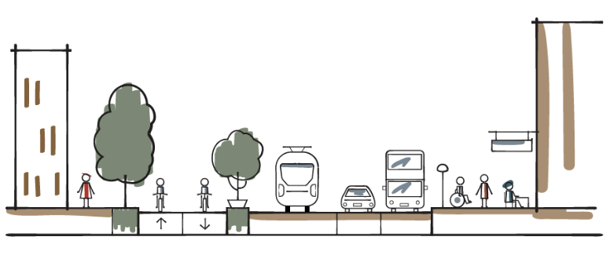
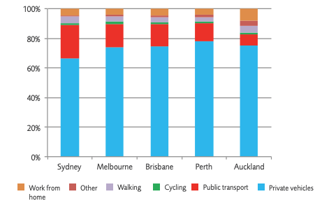

Civil 771: PLANNING AND MANAGING TRANSPORT
Chapter 1: TRANSPORTATION PLANNING IN PRACTICE
Dr Minh Kieu
Lecturer
Department of Civil and Environment Engineering, University of Auckland
These slides:
http://bit.ly/2020-civil771-1

Minh Kieu
From 2020: Lecturer in Transportation at the Department of Civil and Environmenta Engineering
2018-2019: Research Fellow at the University of Leeds, UK
2016-2018: Research Scientist at the Data61, CSIRO, Australia
2011- 2016: PhD Research at the Queensland University of Technology, Australia
2009- 2011: Master in Intelligent Transport System, Linkoping University, Sweden

Learning outcomes:
1. What is transportation planning?
2. Why do we need transportation planning and managing ?
3. An overview of transport planning models
4. Understand how do we plan transport strategies in Auckland
Traffic congestion
Economical cost:
Auckland's congested roads costed our economy over $1.25 billion in lost productivity (NZTA, 2013)
Social cost:
Emergency access and evacuation
Road users stress and anxiety
Our world-class traffic jams!

Source: NZIER (2017),Benefits from Auckland road decongestion
Learning outcomes:
1. What is transportation planning?
2. Why do we need transportation planning and managing ?
3. An overview of transport planning models
4. Understand how do we plan transport strategies in Auckland
What is Transportation Planning ?
Transport planning is defined as planning required in the operation, provision and management of facilities and services for the modes of transport
to achieve safer, faster, comfortable, convenient, economical and environment-friendly movement of people and goods.
It is a prediction of usage demand in future travel and to ensure all the necessary facilities and services to cater to that demand.
Transport planning is highly essential in shaping cities, enabling economic activities, promoting community interaction, and enhancing quality of life.
It is also essential for sustainable development and ensuring safe accessibility at various levels for all individuals.
Learning outcomes:
1. What is transportation planning?
2. Why do we need transportation planning and managing ?
3. An overview of transport planning models
4. Understand how do we plan transport strategies in Auckland
Objectives of Transportation Planning
Environment
Safety
Economy
Integration
Accessibility and Social Inclusion.
The transport planning objectives relating to Environment
1. reduce noise;
2. improve local air quality
3. reduce greenhouse gases - minimizing the impact on climate change
4. protect and enhance the landscape & townscape
5. protect the heritage of historic resources
6. support biodiversity
7. protect the water environment
8. encourage physical fitness
9. improve journey ambience
The transport planning objectives relating to Safety
1. reduce accidents
2. reduce crash severity
The transport planning objectives relating to Safety
The transport planning objectives relating to Economy
1. get good value for money in relation to impacts on public accounts
2. improve transport economic efficiency for business users and transport providers
3. improve transport economic efficiency for consumer users
4. improve reliability
5. provide beneficial wider economic impacts
The transport planning objectives relating to Economy
https://www.nzta.govt.nz/assets/projects/east-west-connections/ewc-interactive-map.pdf
The transport planning objectives relating to Integration
1. integration within and between different types of transport;
2. integration with the environment, so that the transport choices available support a better environment
3. integration with land-use planning
4. integration with policies for education, health and the economy
Integration: Ideal street design
More at the next lecture
The transport planning objectives relating to Accessibility and Social Inclusion
1. measurement of ease of access to facilities and the transport system ;
2. availability of other travel alternatives and emergency travel options
3. measurement of ease of participation in activities (for personal travel) or delivery of goods to their final destination (for goods travel)
Accessibility of public transport in Auckland
Group discussion
1. Discuss an area in Auckland with traffic issues
Congestion
Safety
Noise
Pollution
2. What data would you collect to show the issue?
Flow
Headway
Speed
Occupancy
Transport as a complex organic system: We need a holistic approach in transport planning to recognize and take advantage of all the interactions
Environment
Safety
Economy
Integration
Accessibility and Social Inclusion.
Just focusing on one aspect, for instance cars, will not do it!
Learning outcomes:
1. What is transportation planning?
2. Why do we need transportation planning and managing ?
3. An overview of transport planning models
4. Understand how do we plan transport strategies in Auckland
Travel demand forecasting
Travel demand: number of persons/vehicles expected to travel between a particular origin and destination via a particular route and mode of travel over a given time period
Required for:
Planning new facilities (e.g. roads, residential areas)
Expansion of existing facilities
Long-term demand forecasting with exisiting facilities
Where to best invest our limited funding?
Conventional Four-step Transportation Planning Modelling
Dated back to 1950s and 1960s
Four decision models are the basis of the traditional travel demand model:
Trip generation
Trip distribution
Modal split
Traffic assignment.
Trip generation
Trip generation determines the frequency of origins or destinations of trips in each zone by trip purpose, as a function of land use, household demographics, and other socioeconomic factors.
Number of trips attracted to a certain area or generated in a certain area.
trip production -- generally the trips made from urban area or households
and trip attraction -- the trips made to a particular urban location or activity
Trip generation
The amount of trips generated are related to several factors:
Characteristics of trip-makers: age, income, car ownership, etc
Characteristic of developments: number of units, square footage of floor area, parking spaces, etc
Data are often aggregated at zonal level or at household level
Trip generation: Simple Trip-rate model
Example 1: Determine the number of trips per day attracted to a zone of 200 retail and 500 nonretail workers
| Trip type | Attractions per nonretail employee | Attractions per downtown retail employee |
|---|---|---|
| HBW | 2 | 2 |
| HBO | 3 | 5 |
| NHB | 2 | 4 |
Example 1: Determine the number of trips per day attracted to a zone of 200 retail and 500 nonretail workers
| Trip type | Attractions per nonretail employee | Attractions per downtown retail employee | Number of trips |
|---|---|---|---|
| HBW | 2 | 2 | (200x2)+(500x2)=1400 |
| HBO | 3 | 5 | (200x3)+(500x5)=3100 |
| NHB | 2 | 4 | (200x2)+(500x4)=2400 |
Trip generation
In practice, there are basically two different model structures for trip generation models -- the cross-classification models and the regression models.
Trip generation: The cross-classification model
Extension of the simple trip-rate models
Based on the assumption that the number of trips generated by similar households or households belonging to the same category is the same
\[\begin{aligned} T_i = \sum_{\forall k} \ n_k^i g_k \\ \end{aligned} \]$n_k^i$ number of households in category $k$
$g_k$ average rate of trip generation per household
Trip generation: The regression model
In this model an additive functional form is assumed to exist between the factors which affect trip-generation and the number of trips generated. Generally, a linear function of the following form is used:
\[\begin{aligned} T_i = \alpha_1 z_{1,i} + \alpha_2 z_{2,i} + ... + \alpha_n z_{n,i}\\ \end{aligned} \]$\alpha_k$ parameter of the regression function
$z_{k,i}$ value of the $k$ variable (e.g. income, age, car ownership)
Trip generation: Balancing Trip Productions and Attractions
Make sure that the productions and attractions within the study are equal
Productions are generally considered to be more accurate
Attractions are balanced proportionately to match productions within each zone
| Zone | $P_0$ | $A_0$ | $\bar{P}$ | $\bar{A}$ |
|---|---|---|---|---|
| 1 | 100 | 300 | 100 | 150 |
| 2 | 200 | 300 | 200 | 150 |
| Total | 300 | 600 | 300 | 300 |
Trip Distribution Models:
All trips generated in a study area are allocated among zones
Number of trips produced (Origins) at zone $x$ and the number of trips attracted (Destination) to zone $y$
| Zone | 1 | 2 | 3 | 4 |
|---|---|---|---|---|
| 1 | 200 | 300 | 300 | 200 |
| 2 | 100 | 300 | 200 | 400 |
| 3 | 400 | 200 | 200 | 200 |
| 4 | 300 | 200 | 300 | 200 |
Trip Distribution Models: the Gravity Model
The most widely used trip distribution model is the Gravity Model
uses attributes of the transport system and land use data to distribute trips throughout the network
anologous to Newton's Law of Gravity
The number of trips between zones is
directly proportional to the number of trip attractions generated by the destination zone
inversely proportional to travel time (or cost) between the two zones
Trip Distribution Models: the Gravity Model
\[\begin{aligned} T_{ij} = N_i \Bigg[ \frac{A_j F_{ij} K_{ij}}{ \sum_j A_k F_{ij} K_{ij} } \Bigg] \\ \end{aligned} \]Where:
$T_ij$ = number of trips produced in zone $i$ and attracted to zone $j$
$N_i$ = total number of trips produced in zone $i$
$A_j$ = number of trips attracted to zone $j$
$F_{ij}$ = friction factor between zones $i$ and $j$ (e.g. inverse to travel time)
$K_{ij}$ = socio-economic adjustment factor for trips from zone $i$ to zone $j$ (calibration factor)
Trip Distribution Models: the Gravity Model
\[\begin{aligned} T_{ij} = N_i \Bigg[ \frac{A_j F_{ij} K_{ij}}{ \sum_j A_k F_{ij} K_{ij} } \Bigg] \\ \end{aligned} \]Friction factor $F_{ij}$ is determined by a calibration process: inversely related to travel time
Socio-economic adjustment factor $K_{ij}$ is used to make adjustments of trip distribution values between zones
where differences between estimated and actual values are significant
accounts for unobserved variables
Trip Distribution Models: OD matrix estimation
Sometimes we can observe the number of trips or the demand between some particular pairs of origin and destination (e.g. from traffic survey or from big data)
| Zone | 1 | 2 | 3 | 4 |
|---|---|---|---|---|
| 1 | ?? | 300 | 300 | ?? |
| 2 | 100 | ?? | 200 | 400 |
| 3 | 400 | 200 | ?? | ?? |
| 4 | ?? | 200 | ?? | 200 |
This is now an optimisation problem to fill in the table!
Trip Distribution Models: OD matrix estimation
OD data from Bluetooth/Wifi
Identify individual vehicles by their MAC addresses
Can also be used to estimate travel time, speed and traffic conditions

Trip Distribution Models: OD matrix estimation
OD data from Telecommunication data / Call records data
Large population coverage

Privacy concerns
Coarse resolution
Trip Distribution Models: OD matrix estimation
OD data from Social media data

Trip Distribution Models: OD matrix estimation
Traffic flows data are often used to estimate the OD matrix
Loop detectors
Public transport data: Automatic Vehicle Location, Automatic Passenger Counter
CCTV cameras, drones
Trip Distribution Models: OD matrix estimation
Sometimes the OD matrix can be directly identified from big data, such as Smart Card (e.g. AT Hop Card data)
Main purpose: fare collection
Shows tap-on and tap-off locations of public transport users
Modal split
Estimate the probability of choosing each mode of transport. This is done through implementation of cost functions, reflecting the utility of specific modes which is dependent on various attributes of that specific mode.
Traveler features (mainly sociodemographic characteristics), such as income, car ownership.
Features of the journey such as the purpose of the trip or the time of the day.
Features of the transportation facility such as availability, reliability, costs, safety and security.
Modal split: Aggregate Mode Choice Models
Follows the same rules as Kirchhoff law of electronics. According to this approach, $C_{ij}^k$ being the cost of travelling from zone $i$ to zone $j$ by mode $k$, the probability of choosing mode $k$ ($P_{ij}^k$) is formulated as following:
\[\begin{aligned} P_{ij}^k = \frac{(C_{ij}^k)^{-n}}{\sum_1^k (C_{ij}^k)^{-n}} \\ \end{aligned} \]Where all the available modes are in range of 1 to $k$ and $n$ is a parameter to be calibrated (The value of $n$ is suggested to be chosen between 4 and 9
Modal split: Disaggregate Mode Choice Models (Discrete Choice Models)
Discrete choice models are created based on the assumption that individuals select a specific mode of transport from a finite choice set, each with an utility $U_a$
\[\begin{aligned} U_a = V_a + \epsilon_a \\ \end{aligned} \]Where $V_a$ is the observed utility of mode $a$, which is non-stochastic variable and is dependent on the observable specification of mode $a$. Error term $\epsilon_a$ displays the non-observable features of the mode $a$ and is a stochastic variable.
Modal split: Disaggregate Mode Choice Models (Discrete Choice Models)
Multinomial Logit (MNL) is the most popular disaggregate mode choice model
\[\begin{aligned} P_{i} = \frac{\exp(\mu V_i)}{\sum_{j=1}^J \exp(\mu V_j)} \\ \end{aligned} \]$P_i$ is the probability of mode $i$ to be chosen from a finite mode choice set of 1 to $J$. $\mu$ is Gumbel distribution variance parameter. The exponential distribution of MNL model shows that increase in values of observed utility $V_i$ results in higher probabilities for mode $i$ to be chosen, which is logical.
Modal split: Public transport ridership in Auckland
Strong grow: Over 100 million of trips (data from Auckland Transport in 2019)
Smart Card: 95.2% of Auckland public transport trips are made by customers using an AT HOP card
Group discussion
1. Discuss the possible causes of traffic issues in Auckland
Congestion
Safety
Noise
Pollution
2. Which is the main cause for the issue?
Traffic Assignment
Determine which routes will be used and how much traffic can be expected on each route. Needs the following data:
Demand between zones
Available routes (route choice set)
Decision criteria by which users will select route

Traffic Assignment: Represents a classic equilibrium problem
Route choice decisions are a function of travel cost (e.g. travel time, toll)
Travel cost are determined by traffic flow
Traffic flow is a product of route choice decisions
Traffic Assignment: Wardrop's principles
1st Principle: User choose the route that minimises their own travel time -> User equilibrium
2nd Principle: Users distribute themselves on the network in such a way that the average travel time for all users is minimised -> System Optimum
Traffic Assignment: User Equilibrium
Travellers select a route on the basis of travel cost
Traveller know the travel cost of all available routes
Traveller cannot improve their travel times by unilaterally changing routes
Traffic Assignment: System Optimun
Theoretically, there exists a route choice strategy that minimise the total vehicle hours travel for some traffic flow
\[\begin{aligned} min S(x) = \sum_n x_n c_n (x_n) \\ \end{aligned} \]
Why is it difficult to model traffic systems for planning purposes?
Extremely complex system:
Attributes of the environment (e.g. individual houses, pubs, transport hubs, parks, etc.).
Personal characteristics (heterogeneity).
Features of the local community.
Physical layout of the neighbourhood (e.g. street networks).
Why is it difficult to model traffic systems for planning purposes?
Traditional approaches often work at large scales, struggle to predict local effects
Computationally convenient
Cities are built from the bottom up
Traffic Planning with big data and agent-based modelling
What if I want to play with a planning model? the ABStreet Game
Windows: https://github.com/dabreegster/abstreet/releases/download/v0.2.0a/abstreet_windows_v0_2_0d.zip If the game immediately crashes, it might be a graphics card problem.
Mac: https://github.com/dabreegster/abstreet/releases/download/v0.2.0a/abstreet_mac_v0_2_0a.zip
Linux: https://github.com/dabreegster/abstreet/releases/download/v0.2.0a/abstreet_linux_v0_2_0a.zip
Unzip the folder, then run play_abstreet.sh or play_abstreet.bat. On Windows, you'll probably get a warning about running software from an unknown publisher.
Agenda
1. Problems in the transport sector
2. Definition of Transportation Planning
3. Objectives of transportation planning
4. Models of transportation planning and management
5. Transportation planning practice in Auckland
6. Recap
How transportation planning is done in Auckland?
Auckland uses an integrated system of regional transport and regional land use models
Auckland Development Strategy until 2050
Around 1.66M now, but will be 2.4M in population by 2050
The Development Strategy requires us to work together and ensure we have a clear understanding of where and when investment in planning and infrastructure will be made
The National Policy Statement on Urban Development Capacity 2016 requires councils experiencing high growth to prepare a Future Development Strategy
Auckland transportation planning models: Has been updated recently in 2017
Land-use model: AUCKLAND STRATEGIC PLANNING MODEL: Using DELTA package
the transition and growth sub-model, dealing with demographic change and employment growth
the employment status and commuting sub-model;
the development sub-model;
the area quality sub-model;
the location and property market sub-model, deals with the interaction of space and activities
AUCKLAND REGIONAL AND PASSENGER TRANSPORT MODEL
1. MSM Macro Strategic Model
2. MPT Macro Passenger Transport model
Auckland's MSM Macro Strategic Model
Use EMME’s Path –based equilibrium traffic assignment
MPT Macro Passenger Transport model also uses the EMME package
Group discussion
1. Discuss the possible solutions for traffic issues in Auckland
Congestion
Safety
Noise
Pollution
2. Which solution will make the most impact?
Recap:
1. What is transportation planning?
2. Why do we need transportation planning and managing ?
3. An overview of transport planning models
4. Understand how do we plan transport strategies in Auckland
What is Transportation Planning ?
Transport planning is defined as planning required in the operation, provision and management of facilities and services for the modes of transport
to achieve safer, faster, comfortable, convenient, economical and environment-friendly movement of people and goods.
It is a prediction of usage demand in future travel and to ensure all the necessary facilities and services to cater to that demand.
Transport planning is highly essential in shaping cities, enabling economic activities, promoting community interaction, and enhancing quality of life.
It is also essential for sustainable development and ensuring safe accessibility at various levels for all individuals.
Objectives of Transportation Planning
Environment
Safety
Economy
Integration
Accessibility and Social Inclusion.
Conventional Four-step Transportation Planning Modelling
Trip generation
Trip distribution
Modal split
Traffic assignment.
How transportation planning is done in Auckland?
Auckland uses an integrated system of regional transport and regional land use models